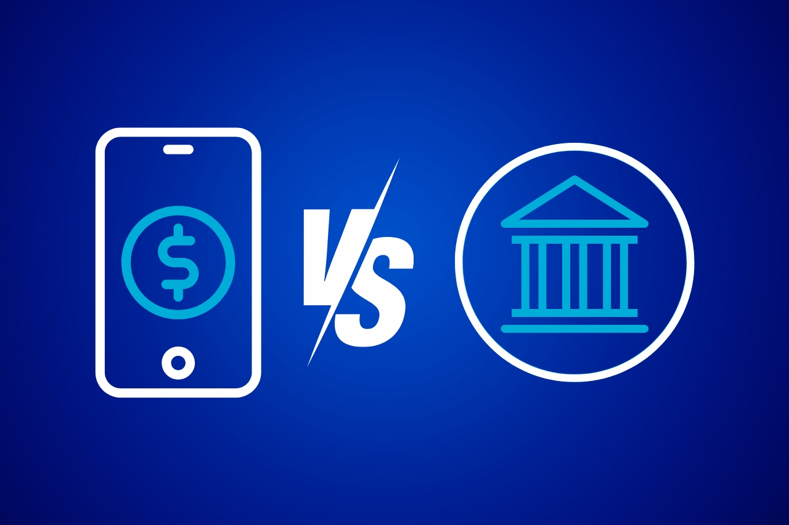
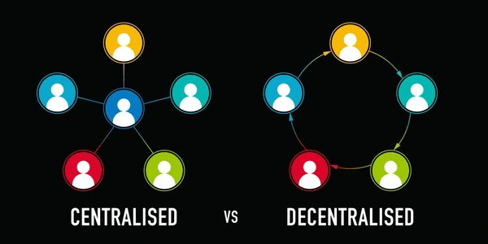

Fundamentos
Problemas del sistema financiero tradicional (Bancos vs dinero digital)
El sistema financiero de siempre, diseñado hace décadas sobre una infraestructura
de intermediarios y papel físico, tiene limitaciones estructurales en eficiencia,
acceso y costos cuando se compara con las alternativas del dinero digital (Fintech,
criptomonedas, etc). Por ejemplo:
- Las transferencias pasan por múltiples intermediarios y pueden tardar desde horas
hasta varios días hábiles, además de congelarse los fines de semana o feriados.
- Ademas, mantener infraestructura física (agencias, cajeros) e intermediarios
encarece las comisiones por mantenimiento, giros internacionales, cambio de divisa
y uso de red.
- Los bancos tambien tienen requisitos estrictos como tener un historial, empleo, etc.
Esto deja a muchas personas afuera en Peru y todo el mundo.
- Cualquier medida (politicas monetarias, etc) que tomen los bancos centrales, puede
generar inflacion por lo que dependemos de ellos.

Aunque, ojo con esto: El dinero digital resuelve la velocidad y la intermediación, no está exento de problemas. Por ejemplo, la volatilidad extrema en criptoactivos no regulados, la brecha digital (dependencia de conectividad e infraestructura), etc.
Que es la centralización vs descentralización?
La centralización y descentralización define cómo se distribuye el poder.

- Centralización: El control y la toma de decisiones se concentran en un único punto o nodo principal (un gobierno, empresa, banco, un servidor central, etc)
- Descentralización: El control y la toma de decisiones se distribuyen entre múltiples nodos independientes o participantes de una red. No existe una autoridad única. Esto es la clave para entender las criptomonedas.
Aunque, cada uno tiene sus ventajas y desventajas:
Centralización
- Pros: Rapidez para responder ante problemas. Facilidad para implementar cambios masivos. Si pasa algo en tu app bancaria, ya sabes a quien llamar.
- Contras: Riesgo de abuso de poder, burocracia, vulnerabilidad si la entidad bancaria sufre un ataque o falla técnica.
Descentralización
- Pros: Transparencia, soberanía del usuario y mayor autonomía de los usuarios.
- Contras: Dificultad para coordinar decisiones urgentes, posible redundancia de recursos y mayor complejidad técnica para el usuario promedio. Si pasa algun problema en la app, es tu problema ya que no hay un soporte tecnico o algun tipo de atencion al cliente por lo que debes ser muy cuidadoso.
¿Qué son las criptomonedas y por qué fueron creadas?
Una vez que ya entendemos todo lo de antes, ahora sí podemos pasar a lo que son las
criptomonedas.
Las criptomonedas son monedas digitales que utilizan criptografia (esto lo veremos
mas adelante y no es algo dificil de comprender, se los aseguro xd) y se usan como una forma moderna para realizar transacciones.
Las criptomonedas, en su mayoría, no estan controladas por ningún gobierno, banco central
ni entidad corporativa.
La primera criptomoneda, Bitcoin, fue creada en 2008 (lanzada en 2009) por una
persona o grupo anónimo bajo el nombre de Satoshi Nakamoto, justo después de la gran
crisis financiera global. Fue diseñada para resolver los problemas del sistema
tradicional que acabamos de revisar:
- Descentralización: Permitir que dos personas puedan enviarse dinero directamente
entre sí. Es como entregar billetes/monedas en físico a alguien en la mano, pero de
forma digital.
- Crear dinero resistente a la inflación y censura: En el dinero tradicional, los gobiernos
pueden imprimir más billetes (generando inflación) o congelar cuentas bancarias. En las
criptomonedas, nadies puede alterar su emisión ya que nadies las controla.
- La bitcoin es un sistema transparente e inmutable: Todas las transacciones se registran.
Una vez que una transacción se realiza, no se puede borrar ni alterar.
- Acceso universal: Cualquier persona en el mundo con una conexión a internet y un
teléfono móvil puede crear una billetera digital y enviar o recibir fondos sin
necesidad de pedir permiso a un banco.